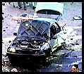
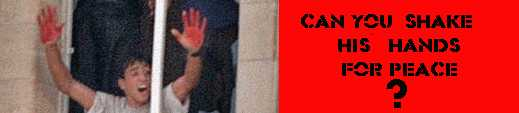
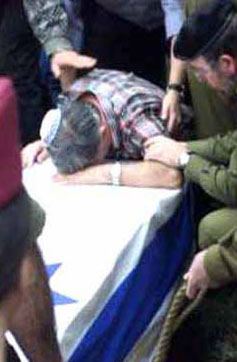
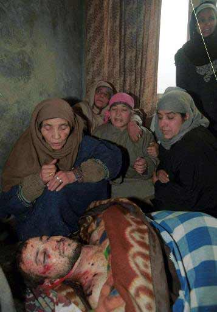

|
November 7, 1993 Efraim Ayoubi was driving to Kiryat Arba. His was passed by an Arab car which pumped thirty slugs into him. Ayoubi died instantly, leaving a pregnant wife and four children. "All We Are Saying is Give Peace a Chance!" February 10, 1994 Naftali Sahar, a 75 year old citrus grower, was beaten to death with an iron bar in his orchard near Kibbutz Na'an. "All We Are Saying is Give Peace a Chance!" February 25, 1994 Sam Eisenstadt, age 80, was chopped up with an axe in the center of Kfar Saba. "All We Are Saying is Give Peace a Chance!" April 9, 1995 Alisa Flatow, 20, was riding a public
(Jewish) bus near the Israeli settlement of Kfar Darom when an
Arab suicide bomber plowed his car into that bus. Alisa and
seven Israeli soldiers, all under the age of 21, were killed.
Alisa was one of 20 AMERICAN victims of the so-called
"Peace" process! "All
We Are Saying is Give Peace a Chance!" March 4, 1996 A suicide bomber killed at least 10 people and and wounded at least 35 others. The Arab bomber, with explosives strapped to his body, blew himself up in the street near the indoor mall known as Dizengoff Center. "All We Are Saying is Give Peace a Chance!"
|
Shall we carry this nightmare called "peace" a step further? Let's say that Arafat, Hamas, Hizbullah, Islamic Jihad, or one of the other Palestinian "Liberation" groups calls for massive armed assaults on Jewish settlements in the more heavily-populated Arab areas. So as not to be thought of as "Zionist sympathizers," Israel's Arab citizens would join in with their Palestinian brothers and sisters. In a scenario such as this, nuclear weapons have little value. But wait, the nightmare isn't over. While the Israeli Army mobilizes internally to meet all these attacks, Egypt, Syria, Jordan, Lebanon and maybe even Iraq launch a coordinated surprise attack upon Israel's borders to finally finish off Israel. Am I dreaming the impossible... or can you not imagine the unimaginable?
SURVIVAL...
Not Racism!
© 2000

Thanks to all the sites that are hosting our defaces.
REMEMBER, We are not against Islam, we are against
Islamic extremism and Arab propaganda!
For comments send
E-mail to m0sad@hotmail.com
-
All Russian security advisers which I cannot post their names for now.
-
People: b00ster, fap, in4mer, AccessD, cnupT, Natush, infr0, ac[x7f]id, l0st_h0st, hhs_ , mam0nt, z7, de4, UkR-XblP
-
Teams: Death Hacker Moscow, IRCtoolZ ,GIBBONS POWER
-
Special thanks to: _marvel_ and GiGA
-
A BIG THANKS TO: IDF, OUR NATION PROTECTERS. OUR JEWISH FRIENDS IN WHASINGTON AND ALL THE PEOPLE WHO MADE MODERN ISRAEL WHAT IT IS TODAY, YOU WILL ALWAYS BE REMEMBERED!
© m0sad {team}
The G-d of Israel has given us all the tools to bring immediate redemption. It is now up to us to use them. The longer we pretend that we know how to make peace better than He does, the more grievously we will suffer, G-d forbid. It is true that one of G-d's Names is Shalom, Peace. But we would do well to remember that He is also called a Man of War. There is no honor in a peace which would have us denying our obligations to G-d. And there is no shame in fighting a war to uphold those obligations. If Mr. Barak is prepared to make painful decisions, then let him decide to rid our country of the cancer which is destroying us from within. Anything less will only make the current war to destroy Israel even more violent and bitter. (Gary M. Cooperberg)

Palestinian celebrating bloody murder of
Israelis in Ramallah
( HIGHLY RESPECTED DAILY CENTRIST ISRAELI NEWSPAPER )
| HEADLINES | |
| Bomb explosion in Jerusalem Market: 10 Killed. | Bus Exploded in Srinagar, Kashmir: 3 infants among 12 killed |
| US army personal shot dead in Riyadh. | Arms and Ammunitions seized in Delhi, 3 Pakistan Nationals held. |
| Growing concern in Israel over the use of Children as suicide bombers by Islamic terrorist groups . | We will blast off India, Israel and then the world with our Islamic Nuclear Bomb: Gen Parwaz Musharaf, current "owner" of Pakistan |
| Another Israeli Soldier beaten to death by Palestine vandals. | 17 Killed in Moscow as Islamic Terrorists blast a residential colony. |
Topic of the week: Islamic Terrorists, an overview
All over the world, headlines consists of death, explosion, drugs and what not. In Asia, the biggest threat to humanity is ISLAMIC EXTREMISM. The turbulent political situation is very dangerous. The rise of EXTREMISM is a warning: things in future are going to be gloomy, dark. Unless this menace of ISLAMIC EXTREMISM is dealt with utmost seriousness, peace is impossible on Earth.
Take Kashmir for example. Till 1990 there was no cry for independence. Suddenly, a whole of Afghani and Pakistani along with Mujahedeen from Sudan, Egypt, Saudi Arabia entered the Kashmir valley and ruined the states future. The Indian state that was once famous for its religious tolerance underwent a tormented decade. First the Hindus of Kashmir who were living in that Land for 4000 years had to migrate and live like refugees. Now the targets are the Sikhs and Christians ..tomorrow it could be the innocent Buddhists. The economy of Kashmir has been doomed. It would take centuries for Kashmir to recover. And for what and whom????? For some thing called JEHAD.
Children are used for blasting bombs by the ISLAMIC TERRORITS. This is the height of inhumanity. Just for the personal interest of some fugitive, failed leader, innocent children are used as human bombs. They are made to stand in front of tanks!!! The remote in the hand of his father, and after a irreligious prayer the father blasts his child for the sake of JEHAD! The Father is congratulated by the "officers" and he gets a promotion. This is a common scene in all the troubled regions of Asia.
ASIA that gave birth to civilization is now under threat. Annihilation of humans can be stopped. First, the Muslims should realize that the world has changed a lot from the medieval times. This is the new age, an era where we can help each other out. Secondly, all problems can be solved peacefully. No amount of bombs and guns can bring peace. There are civilized ways of sorting of problems.
And what about the arms the so called Fighters for Islam are using??? The old stale guns, rejected from the Western world. They are selling their land and women folk to get money for buying illegal arms and ammunition. Countries that could not succeed in providing their citizens food have enough money to buy illegal guns????
Photo feature
|  |  |
| A daily scene in Israel. A father crying over his sons coffin. The deceased , who was an Israeli soldier was crushed to death by sticks and stones | A Muslim youth killed when a Bomb explosion took place in the crowded market place. The local Muslims who cooperate with the Indian Army are shot dead in the Kashmir valley by Pakistan based terrorist groups . (Jehad against whom???????) |
Today it is ISRAEL AND INDIA... TOMORROW IT COULD BE YOUR COUNTRY.
SAVE THE EARTH
from
Pollution, AIDS and ISLAMIC TERRORISTS
© m0sad {team}